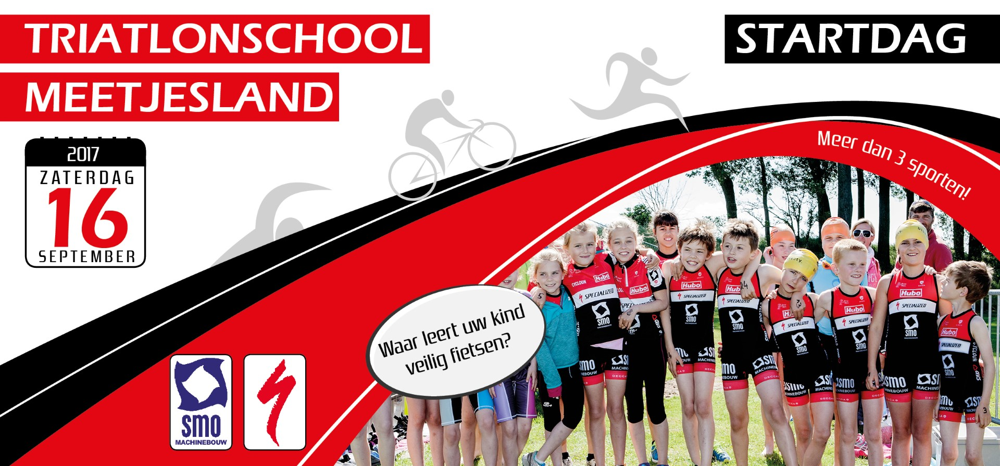
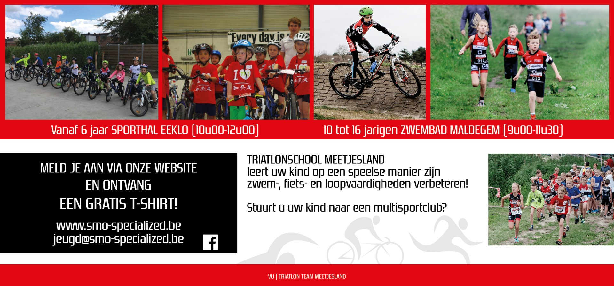

Op zaterdag 16 september wordt de startdag georganiseerd van de Meetjeslandse triatlonschool. Wil je eens gratis proeven van een gevarieerd aanbod? Kom dan langs in Eeklo of Maldegem voor onze open clubtraining voor jeugdatleten tussen 6 en 16 jaar.
Door de steeds groeiende vraag van jeugdige atleten om eens te “proeven” van de triatlon sport is het SMO-Specialized triatlon team gestart met een wekelijks aanbod voor de jeugd. De triatlonsport is niet langer toegankelijk voor alleen maar super atleten. Het aanbod werd onder impuls van jeugdcoördinator Steven Haeck aangepast aan de leeftijd en hun ontwikkelingsfasen.
De ironkids tussen 6 en 10 jaar kunnen in Eeklo terecht van 10u tot 12u00 aan de Eeklose sporthal. De kinderen ontplooien zich op een speelse manier binnen de verschillende disciplines van de triatlonsport. Allerhande bewegingsactiviteiten zullen de basis vormen voor een verdere gezonde en fitte levensstijl.
De jeugd van 10 (geboortejaar 2007) tot 16 jaar kan in Maldegem terecht voor hun proefles. Een ervaren team van gediplomeerde jeugdtrainers staan klaar om de ironkids met raad en daad bij te staan. Schrijf je in voor de startdag en ontvang een gratis cool T-shirt! Voor meer info over de club kan men terecht via www.smo-specialized.be of contacteer jeugdcoördinator Steven Haeck 0476 90 70 29.
Vergeet je fietshelm, fiets en zwemgerief zeker niet !
Registreren kan alvast via ons online formulier. Dit is belangrijke info die we gebruiken voor een correct ledenbeheer.

Kom zeker eens proeven van het multisporten!
